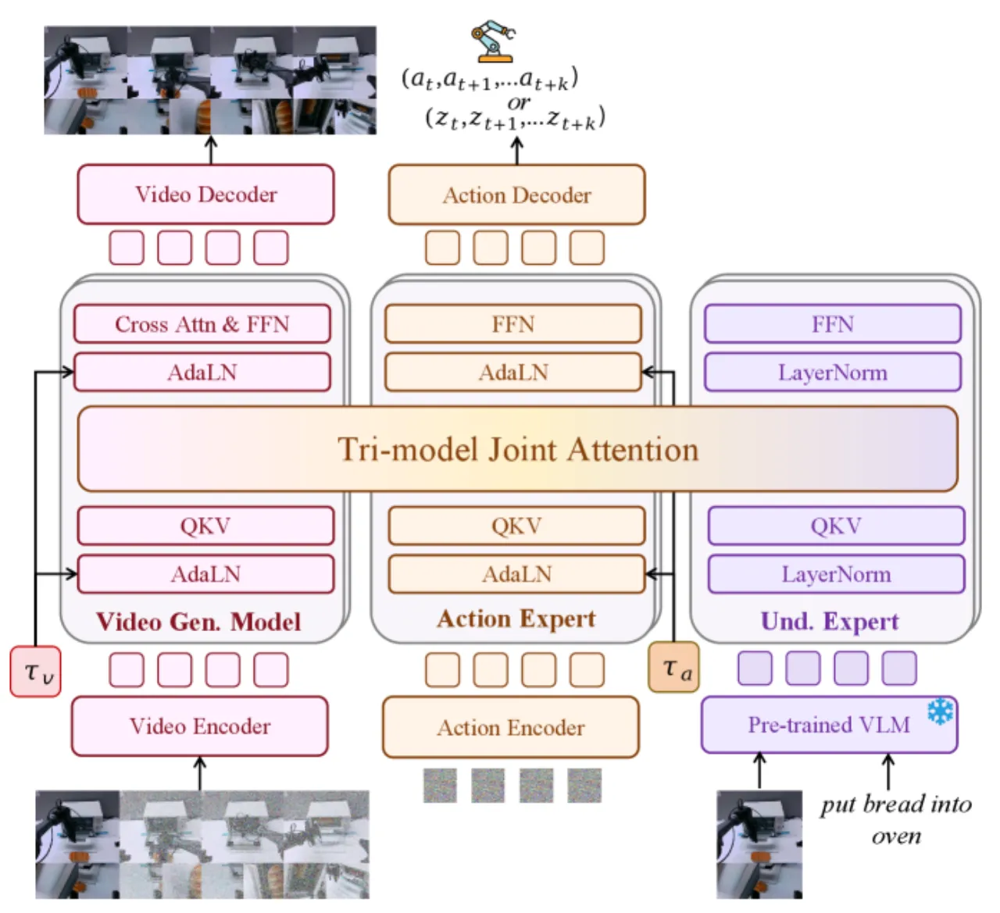
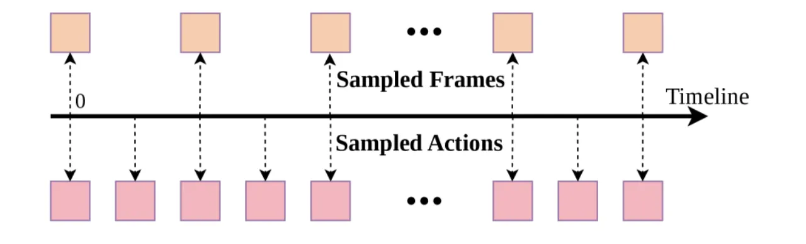
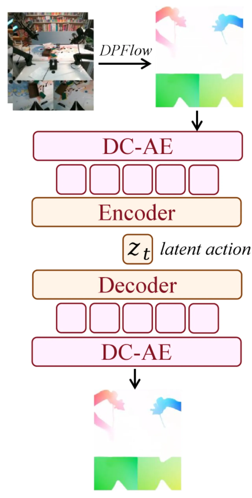
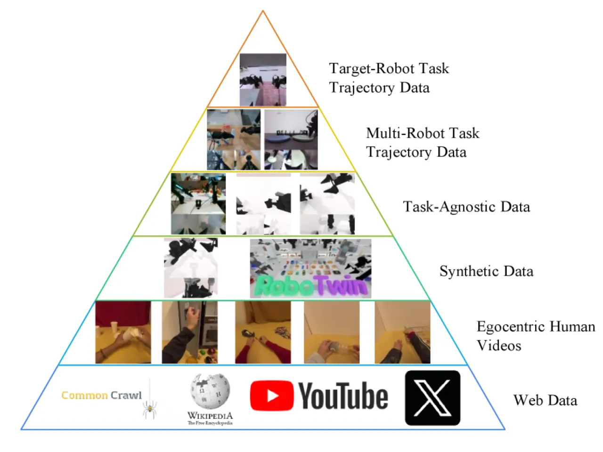
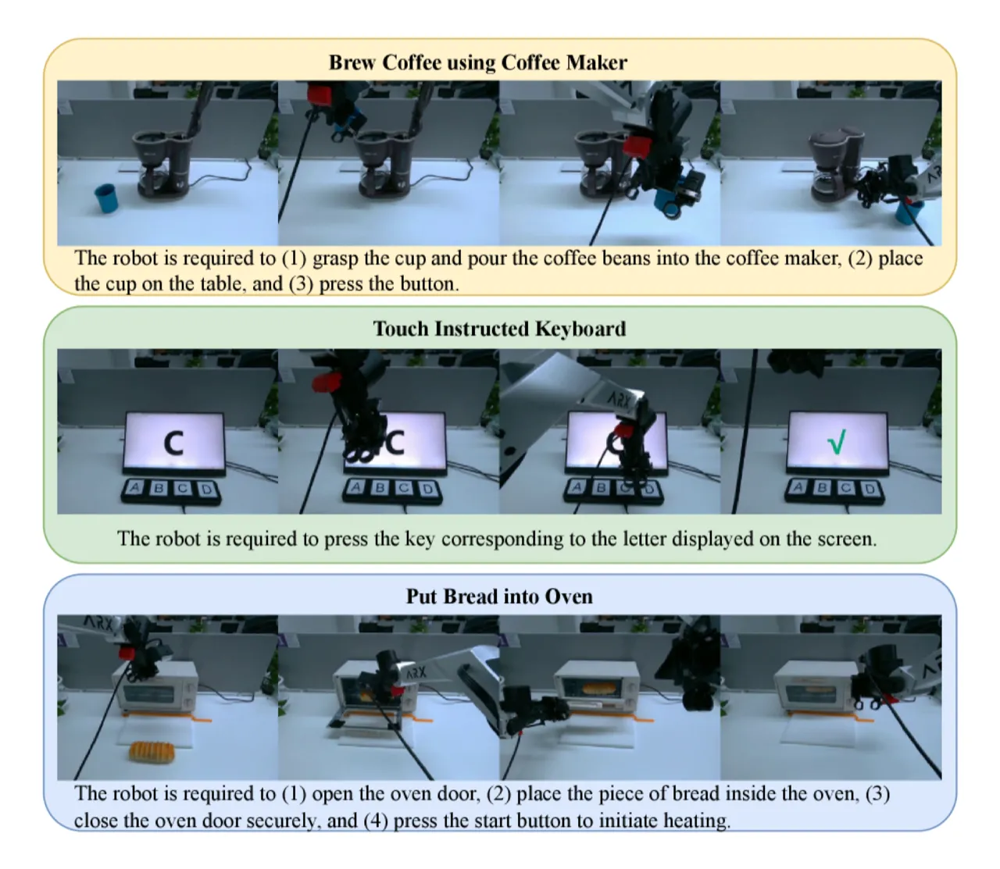
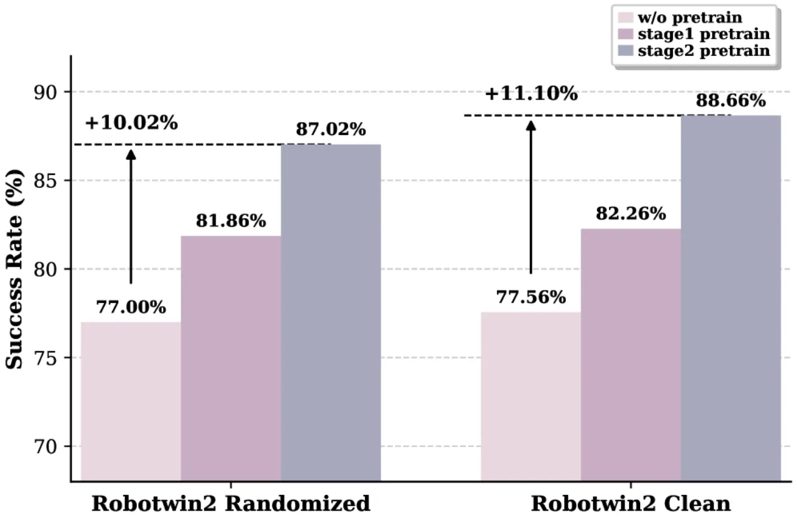

Motus 提出了一个统一的 Latent Action 世界模型框架，通过 Mixture-of-Transformers（MoT）架构将视频生成专家、动作预测专家和视觉语言理解专家融合为一体，借助 optical flow 作为跨具身的通用运动先验，在无标注视频上大规模预训练，并在多机器人平台上实现了显著的性能提升。
具身 AI 领域长期存在"能力碎片化"问题：VLA（视觉-语言-动作）模型、世界模型（WM）、逆动力学模型（IDM）、视频生成（VGM）、视频-动作联合预测五类能力分属不同模型，难以相互增益。此外，绝大多数视频数据缺乏动作标注，而机器人平台之间动作空间各异，导致大规模跨具身预训练十分困难。
"We propose Motus, a unified world model framework that integrates five key embodied AI capabilities—VLA, WM, IDM, VGM, and video-action joint prediction—into a single model via a Mixture-of-Transformers (MoT) architecture."

现有方法的核心痛点有两个：（1）如何在单一架构中统合多模态生成能力，同时不牺牲各专项功能；（2）如何在动作标注稀缺、具身差异显著的情况下利用海量异构视频数据。Motus 通过 optical flow 作为"通用运动代理"来绕过动作标注缺失的问题，用深度卷积变分自编码器（DC-AE）将光流压缩为 14 维的 latent action 向量，恰好匹配主流机器人控制空间维度，从而实现跨具身迁移。
Motus 的核心由三部分组成：Mixture-of-Transformers 多专家架构、基于 optical flow 的 Latent Action VAE，以及 Action-Dense Video-Sparse 预测策略，配合六层具身数据金字塔完成三阶段训练。
Motus 集成三个专家模块：视频生成专家基于 Wan 2.2 5B（参数量 5.00B），视觉语言理解专家采用 Qwen3-VL-2B（2.13B），动作专家为自定义 Transformer 块（641.5M），理解专家（Understanding Expert）占 253.5M，总参数量约 8B。三者通过 Tri-model Joint Attention 机制共享 token，在同一前向传播中联合建模视频帧与动作序列。

传统 VLA 依赖真实动作标注，而绝大多数网络视频无此标注。Motus 用 optical flow 作为运动代理：用 DC-AE（深度卷积变分自编码器）将相邻帧间光流编码为 14 维 latent action 向量 zt，该维度恰好与主流机器人（如 Aloha-2）的控制空间对齐。训练时 90% 为无标注重建损失，10% 为有标注监督，使模型在海量未标注视频上高效预训练。

训练数据按质量和规模分为六层金字塔：从底层海量网络视频（最低质量、最高数量），逐层递进至顶层目标机器人示范数据（最高质量、最少数量）。三阶段训练流程：

实验覆盖仿真基准（RoboTwin 2.0、LIBERO-Long、VLABench）和两个真实机器人平台（AC-One 和 Agilex-Aloha-2），基线包括 X-VLA 和 π₀.₅（Pi0.5）。
| 方法 | 平均成功率（clean） | 平均成功率（randomized） |
|---|---|---|
| π₀.₅ | 42.98% | 43.84% |
| X-VLA | 72.80% | 72.84% |
| Motus（ours） | 88.66% | 87.02% |
Motus 在 RoboTwin 2.0 的 50+ 任务上平均成功率 88.66%（clean）/ 87.02%（randomized），分别比 X-VLA 提升 +15%，比 π₀.₅ 提升 +45%。
| 基准 | π₀.₅ | X-VLA | Motus（ours） |
|---|---|---|---|
| LIBERO-Long | — | 97.6（SoTA） | 97.6 |
| VLABench In-Dist. | 0.43 | — | 0.48 |
| VLABench Cross-Cat. | 0.22 | — | 0.25 |
| 平台 | π₀.₅ 平均 | Motus 平均 | 提升 |
|---|---|---|---|
| AC-One | 14.79% | 63.22% | +48% |
| Agilex-Aloha-2 | 48.60% | 59.30% | +11% |
典型任务成功率：Place Cube into Plate（AC-One）100%、Brew Coffee（AC-One）62%、Get Water from Dispenser（Agilex）96%。
Latent Action VAE 在动作预测上明显优于基线：Motus action MSE 0.014，ResNet18+MLP 0.044，DINOv2+MLP 0.122。
| 平台 | FID ↓ | FVD ↓ | SSIM ↑ |
|---|---|---|---|
| Agilex-Aloha-2 | 9.4571 | 49.2848 | 0.88618 |
| AC-One | 12.9609 | 73.1325 | 0.84605 |


消融结果表明，Stage 1（VGM 适配）和完整的三阶段预训练均对最终性能有显著贡献，移除预训练后性能大幅下降，验证了 latent action 共享运动先验的有效性。
三阶段训练总计约 ~18400 GPU 小时（Stage 1 ~8000 + Stage 2 ~10000 + Stage 3 ~400），对大多数研究团队而言门槛极高，限制了开放复现与迭代速度。
论文指出"universal motion priors"是未来工作方向，当前 optical flow 压缩为 14 维 latent action 的做法依赖于目标机器人控制空间恰好与该维度匹配，对控制维度差异较大的新型具身形态泛化能力有待验证。
论文提到将"internet-scale video pretraining"列为未来工作，说明当前数据规模和多样性仍存在天花板，距离真正通用的具身智能尚有距离。
Latent action 维度（14 维）为针对特定机器人平台设计的，若目标平台动作空间维度差异显著，则需重新设计 DC-AE 或额外适配，通用性受限。